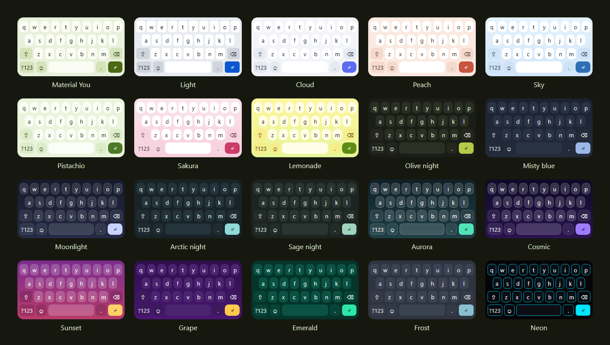
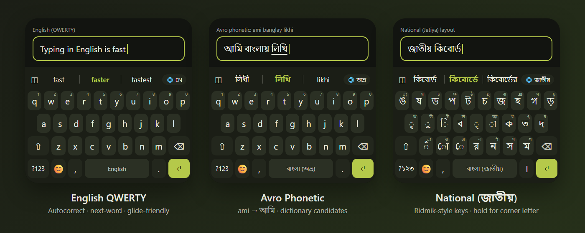

Jolpai Keyboard › Bangla keyboard guide
Free · Open source · On-device AI
Jolpai: a free, open-source, AI-powered Bangla keyboard for Android
Jolpai Keyboard (জলপাই কিবোর্ড) is a modern Bangla (Bengali) and English keyboard for Android. It has a clean, good-looking design, uses on-device machine learning to predict your next word, and is fully open source. Type with Avro phonetic, the National (জাতীয়) or the Probhat (প্রভাত) layout. No ads, no account, no tracking.
Jolpai at a glance
| App | Jolpai Keyboard (জলপাই কিবোর্ড), package com.yeamin.jolpai |
|---|---|
| What it is | Bangla and English keyboard (input method) for Android phones |
| Price | Free: no ads, no in-app purchases, no subscription |
| Licence | Open source, Apache License 2.0 |
| Latest version | 0.14.1 (beta), about 32 MB |
| Needs | Android 8.0 (Oreo) or newer; Material You colours on Android 12+ |
| Layouts | Avro phonetic, National (জাতীয়), Probhat (প্রভাত), English QWERTY |
| AI / ML | On-device neural next-word model for English; Bangla next words from 91 million words of text |
| Works offline | Yes: typing, suggestions, AI, spell check; translation after a one-time download |
| Privacy | No account, analytics or ads; encrypted on-device storage |
| Developer | Md Yeamin Talukder, Bangladesh |
A modern, machine-learning (ML) keyboard that stays on your phone
Most keyboards guess the next word from the last one or two words. Jolpai also runs a small neural language model (an LSTM of about 4.7 MB) right inside the keyboard. It reads the sentence you're writing and uses it to:
- Predict the next word from the whole sentence, not just the last word.
- Rank suggestions so the word that fits the sentence comes first.
- Autocorrect with context: "i want to takl" becomes talk, not tale.
- Predict emoji by meaning: "good night" offers 😴.
- Catch wrong words such as their / there in the spelling check.
On held-out everyday sentences the model put the right next word in the top 3 about 35% of the time (up from 0%) and cut wrong autocorrections from 12.5% to 5.5%. For Bangla, next-word suggestions come from counts over 91 million words of open Bangla text (কেমন → আছেন, আমি তোমাকে → ভালোবাসি), and the keyboard learns your own phrases, letting old habits fade.
Because the model runs on the device, nothing you type is sent to a server. You can turn it off in Suggestions → On-device AI predictions.
An open-source keyboard you can check
A keyboard sees every password, message and search you type, so trust matters. Jolpai is open source under the Apache License 2.0: anyone can read the full source code on GitHub, report issues or suggest changes. Every release is built and signed by GitHub Actions from that public code, and ships with SHA-256 checksums.
- No account, no analytics, no ads and no crash-reporting SDK.
- Learned words and clipboard history live in an encrypted database (SQLCipher, key in the Android Keystore).
- Password and incognito fields are never learned or saved.
- The internet is used only for features you turn on: GIF search, the translation pack download and checking for updates.
A good-looking Bangla keyboard with a clean, modern UI
Jolpai is built to be pleasant to look at every day:
Clean Bangla keys
Vowel signs (া ি ে) sit centred on their keys, without the dotted circle.
143 themes
Light, dark, Chameleon (your app's colour), glowing, time-of-day and bouncy themes, festival themes and your own photo.
Material You
Colours that follow your wallpaper and light or dark mode (Android 12+).
Smooth and tactile
Rounded keys, key fonts, key sounds and crisp haptics, including a space-bar trackpad that ticks as it moves.

Avro phonetic, National (জাতীয়) and Probhat (প্রভাত) layouts
Avro phonetic
Type Bangla the way it sounds in English letters: ami banglay likhi → আমি বাংলায় লিখি. Jolpai uses the open Avro rule table,
shows dictionary candidates and remembers the words you pick.
National (জাতীয়) layout
The Bangladesh National keyboard layout, arranged like Ridmik Keyboard, with long-press letters on each key.
Probhat (প্রভাত) layout
The popular Probhat layout, with clean vowel-sign keys. Turn it on in Languages & layouts.
Switch between English, অভ্র, জাতীয় and প্রভাত with one tap on the top bar.

Everything else in the keyboard
- Offline spelling and grammar check for Bangla and English: look-alike letters, vowel signs, word endings, দাঁড়ি and punctuation.
- English ↔ Bangla translation inside the keyboard, offline after a one-time ~30 MB download.
- Voice typing in Bangla or English with spoken punctuation ("comma", "দাঁড়ি", "নতুন লাইন").
- Clipboard manager with pins, folders and automatic categories (links, OTP codes, phone numbers).
- Snippets: type
@addrto insert your address, or@salamfor আসসালামু আলাইকুম. - Emoji, kaomoji, stickers and GIFs, with emoji search in English and Bangla.
- Gestures: space-bar trackpad, swipe to delete words, hold Enter for emoji or to select text, custom gestures.
- One-handed and floating keyboard, adjustable height and a number row.
- Typing stats: words per day and typing speed (counts only, never your words).
- Backup and restore to a file you choose, and updates right inside the app.
New in 0.14: an easy switch from Ridmik or Gboard
Already using Jolpai? Update inside the app (About → Update); your words and settings stay.
Classic, Simple or Modern
Classic works like Ridmik: slide the space bar to change language, with symbol hints on the letters. Simple looks like Gboard. Modern is Jolpai's own.
জাতীয় exactly like Ridmik
Every key types what is on it, checked key by key against Ridmik. Tidied vowel signs are an option.
143 themes, 30 key fonts
Cool dark, ambient, Chameleon (the colour of the app you're in) and moving themes, plus Bangla and stylish fonts or your own font file.
A smarter Bangla spell check
Leaves Bangla typed in English letters alone, understands জাতীয় typed key by key, and suggests fixes as you type.
A short welcome sets the keyboard up like the one you used before (also later in Typing → Quick setup), and a 🐞 Report a bug button opens a ready-filled GitHub issue with your phone's details, never your typing.
Jolpai vs Ridmik Keyboard vs Gboard
Where Jolpai goes further than the two keyboards most Bangla writers use:
| Feature | Jolpai | Ridmik | Gboard |
|---|---|---|---|
| Open source | ✓ Apache 2.0 | ✕ Closed source | ✕ Closed source |
| No ads, nothing to buy | ✓ Free, no ads | ✕ Ads and in-app purchases | ✓ No ads |
| Collects none of your data | ✓ Nothing leaves your phone | May collect personal info and device IDs | May collect audio, app activity and more |
| Bangla spelling and grammar check, offline | ✓ Bangla and English | Not listed | Not listed |
| Translate inside the keyboard | ✓ Offline | Not listed | Online (Google Translate) |
| Keyboard takes the colour of your app | ✓ Chameleon themes | Not listed | Not listed |
| Themes | ✓ 143, all free | Theme store, some paid | Colours and your photo |
| Your own font on the keys | ✓ 30 fonts or your own file | Not listed | Not listed |
| Clipboard that sorts OTP codes, links and numbers | ✓ Automatic categories | Recently copied texts | Recent copies and pins |
| Learned words and clipboard encrypted | ✓ Encrypted on the phone | Not listed | Not listed |
Ridmik and Gboard details come from their Google Play listings and Data safety sections (checked November 2026) and may change; "Not listed" means the listing doesn't mention it. To be fair: Gboard has glide typing, handwriting and excellent voice typing, and both are on Google Play. Jolpai doesn't have those yet.
How to install Jolpai Keyboard
- Open the download page on your phone. Most phones need the arm64-v8a APK.
- Open the downloaded file and tap Install (allow installs from your browser if Android asks).
- Open Jolpai and follow the two setup steps: turn on Jolpai Keyboard, then choose it.
- Tap the language button to pick বাংলা (অভ্র), বাংলা (জাতীয়) or বাংলা (প্রভাত).
জলপাই: ফ্রি, ওপেন সোর্স, এআই বাংলা কিবোর্ড
জলপাই কিবোর্ড অ্যান্ড্রয়েডের জন্য একটি আধুনিক বাংলা ও ইংরেজি কিবোর্ড। সুন্দর ও পরিচ্ছন্ন ডিজাইন, ফোনের ভেতরেই চলা এআই (মেশিন লার্নিং) পরের শব্দের পরামর্শ দেয়, আর পুরো কোড ওপেন সোর্স। অভ্র ফোনেটিক, জাতীয় ও প্রভাত লেআউটে লিখুন। অফলাইন বানান ও ব্যাকরণ যাচাই, ইংরেজি ↔ বাংলা অনুবাদ, ভয়েস টাইপিং, ক্লিপবোর্ড আর ১৪৩টি থিম। কোনো বিজ্ঞাপন নেই, অ্যাকাউন্ট লাগে না, কোনো ট্র্যাকিং নেই — সম্পূর্ণ ফ্রি।
Frequently asked questions
Is there an open-source Bangla keyboard for Android?
Yes. Jolpai Keyboard is open source under the Apache License 2.0. Its full source code is on GitHub, and every release is built and signed by GitHub Actions from that code, with SHA-256 checksums.
Which Bangla keyboard uses machine learning?
Jolpai runs a small neural language model (an LSTM of about 4.7 MB) on the phone. It reads the sentence you are typing to predict the next word, rank suggestions, autocorrect and pick emoji by meaning. On held-out sentences it put the right next word in the top 3 about 35% of the time (up from 0%) and cut wrong autocorrections from 12.5% to 5.5%. Bangla next words come from counts over 91 million words of open Bangla text plus what you type.
Does the AI send my typing to a server?
No. The model runs inside the keyboard on your phone. Jolpai has no account, no analytics and no ads, and keeps learned words and clipboard history in an encrypted database on the device.
What is a good-looking, modern Bangla keyboard?
Jolpai is designed to look clean and modern: Bangla vowel-sign keys without dotted circles, Material You colours that follow your wallpaper, 143 themes including Chameleon themes in the colour of the app you are in, gradients and your own photo, rounded keys, key fonts and smooth animations.
Which Bangla layouts does Jolpai support?
Avro phonetic (type how a word sounds, ami → আমি), the Bangladesh National (জাতীয়) layout, the Probhat (প্রভাত) layout and English QWERTY. You switch between them with one tap. Bijoy is not included.
Does Jolpai work without internet?
Yes. Typing, suggestions, the AI model, Avro, the spelling check, clipboard and themes all work offline. Translation works offline after a one-time download of about 30 MB. Only GIF search and checking for updates use the internet.
Is Jolpai on the Google Play Store?
Not yet. Download the APK from the official website or GitHub Releases; most phones need the arm64-v8a file. After that, the app can update itself from About → Update.
Is Jolpai free?
Yes. It is completely free, with no ads, no in-app purchases and no subscription.
Also searched as: Bangla keyboard, Bengali keyboard, best Bangla keyboard for Android, open source keyboard, modern keyboard for Android, good UI Bangla keyboard, AI keyboard, ML keyboard, machine learning keyboard, offline keyboard, privacy keyboard, keyboard without ads, Avro keyboard for Android, Jatiya keyboard, Probhat keyboard, Bangla typing app, Bangla spell checker, বাংলা কিবোর্ড, বাংলা টাইপিং অ্যাপ, অভ্র কিবোর্ড, জাতীয় কিবোর্ড, প্রভাত কিবোর্ড, ওপেন সোর্স কিবোর্ড, এআই কিবোর্ড.